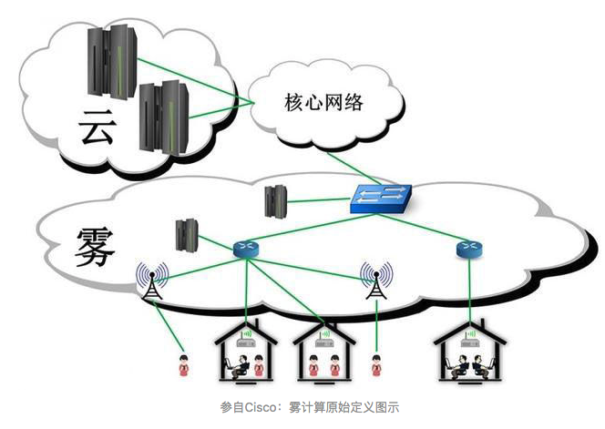
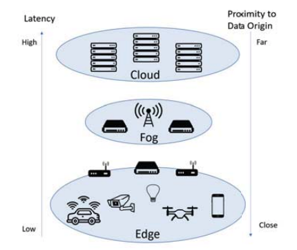
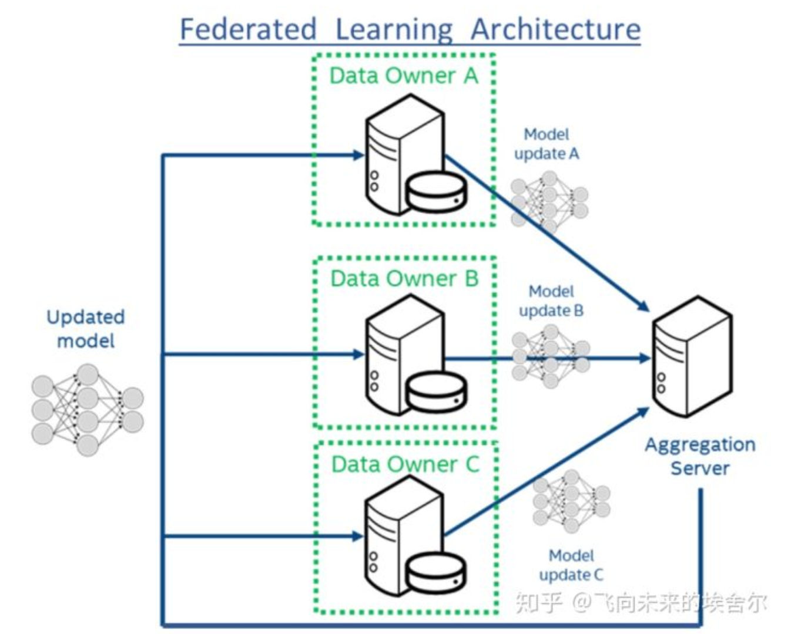
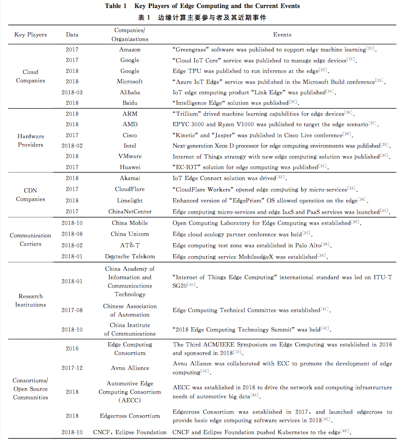

边缘计算概述
一. 基本定义
- 暂时没有公认的严格的定义。
- 边缘计算是指在网络边缘执行计算的一种新型计算模型，其边缘是指从数据 源到云计算中心路径之间的任意资源和网络资源，除“云”之外皆是“边缘”
- 边缘计算的基本原理是将计算任务迁移到产生源数据的边缘设备上。
- 边缘计算是为应用开发者和服务提供商在网络的边缘侧提供云服务和IT环境服务。
二.背景
-
物联网技术兴起
大量数据数据将在边缘处理 - 移动互联网爆发
大量智能手持终端的联网，给骨干网络带来了前所未有的压力，只通过云计算模式提供的算力往往捉襟见肘，宕机、卡顿、死屏、延迟等问题日益凸显
-
人工智能技术的发展
-
传统云计算的缺点
- 实时性不高
- 带宽不足
- 能耗大
- 不利于数据安全和隐私(数据产生源头距离云太远)
- 边缘计算的优点
- 在网络边缘处理，减轻带宽和数据中心功耗
- 延迟低
- 减少数据泄露风险
三. 发展历史/重要事件
1. CDN
边缘计算最早可以追溯到1998年阿卡迈（Akamai）公司提出的内容分发网络(content delivery network, CDN)。CDN是一种基于互联网的缓存网络，依靠部署在各地的缓存服务器，通过中心平台的负载均衡、内容分发、调度等功能模块，将用户的访问指向距离最近的缓存服务器上，以此降低网络拥塞，提高用户访问响应速度和命中率。CDN强调内容(数据)的备份和缓存，而边缘计算的基本思想则是功能缓存(function cache)，等于要把计算功能搬到边缘上来，而不是简单的把内容放上去。 - 边缘计算场景下的视频和VR，复用CDN领域的知识 - CDN是什么？ - [CDN提出] Pallis G, Vakali A. Insight and perspectives for content delivery networks[J]. Communications of the ACM, 2006, 49(1): 101-106
2. Cloudlet
2009年Satyanarayanan等人提出了Cloudlet的概念，Cloudlet是一个可信且资源丰富的主机，部署在网络边缘，与互联网连接，可以被移动设备访问，为其提供服务，Cloudlet可以像云一样为用户提供服务，又被称为“小朵云”。此时的边缘计算强调下行，即将云服务器上的部分功能下行至边缘服务器，并不注重“小朵云”和云端的联系，以减少带宽和时延。 - small-scale cloud data center that is located at the edge of the Internet - [Cloudlet概念提出] Satyanarayanan M, Bahl V, Caceres R, et al. The case for VM-based cloudlets in mobile computing[J]. IEEE Pervasive Computing, 2009, 8(4): 14-23
3. Frog Computing
思科公司(Cisco)于2011年提出了雾计算(Frog Computing)，并将雾计算定义为迁移云计算中心任务到网络边缘设备执行的一种高度虚拟化计算平台。雾计算不需要强大的计算能力，只需要一些性能较差、分布零散的计算设备。它通过减少云计算中心和移动用户之间的通信次数，以缓解主干链路的带宽负载和能耗压力。雾计算和边缘计算具有很大的相似性，但是雾计算关注基础设施之间的分布式资源共享问题，而边缘计算除了关注基础设施之外，也关注边缘设备，包括计算、网络和存储资源的管理，以及边端、边边和边云之间的合作。
- 雾计算VS云计算
- 雾计算可理解为本地化的云计算, 雾是更贴近地面的云
- 但是雾计算相比于云计而言算要把所有数据集中运输到同一个中心，雾计算的模式是设置众多分散的中心节点，即所谓“雾节点”来处理，这样能够让运算处理速度更快，更高效得出运算结果 
- 雾计算 VS CDN
- CDN是弥补TCP/IP本地化缓存问题，雾计算就是弥补云计算本地化计算问题
- 雾计算 VS 边缘计算
- 概念相近
- 雾计算不需要精确划分处理能力的有无，处理能力放在包括IoT设备的LAN里面
- 边缘计算，进一步推进了雾计算的LAN内的处理能力的理念，处理能力更靠近数据源，不是在中央服务器里整理后实施处理，而是在网络内的各设备实施处理
- 一种看法： 
-
[img/2019年SEC的一篇讨论] M. Caprolu, R. Di Pietro, F. Lombardi and S. Raponi, "Edge Computing Perspectives: Architectures, Technologies, and Open Security Issues," img/2019 IEEE International Conference on Edge Computing (EDGE), Milan, Italy, img/2019, pp. 116-123.
-
[雾计算在物联网中的角色] Bonomi F, Milito R, Zhu J, et al. Fog computing and its role in the internet of things[C]//Proceedings of the first edition of the MCC workshop on Mobile cloud computing. ACM, 2012: 13-16.
-
[如何通过雾计算来降低云计算的能耗] Fatemeh Jalali, Kerry Hinton, Robert Ayre, Tansu Alpcan, and Rodney S. Tucker, “Fog Computing May Help to Save Energy in Cloud Computing,” IEEE Journal of Selected Areas in Communications, vol. 34, no.5, May 2016.
-
[介绍了雾计算的概念、应用及面临的问题] Yi S, Li C, Li Q. A survey of fog computing: concepts, applications and issues[C]//Proceedings of the 2015 Workshop on Mobile Big Data. ACM, 2015: 37-42.
-
[主要讨论雾计算的安全、隐私和管控方法]
- Dsouza C, Ahn G J, Taguinod M. Policy-driven security management for fog computing: Preliminary framework and a case study[C]//Information Reuse and Integration (IRI), 2014 IEEE 15th International Conference on. IEEE, 2014: 16-23.
-
Yi S, Qin Z, Li Q. Security and Privacy Issues of Fog Computing: A Survey[C]//WASA. 2015: 685-695.
-
[介绍了雾计算平台及其上层应用] Yi S, Hao Z, Qin Z, et al. Fog computing: Platform and applications[C] // Hot Topics in Web Systems and Technologies (HotWeb), 2015 Third IEEE Workshop on. IEEE, 2015: 73-78.
-
[介绍了雾计算产生背景、计算模型、体系结构及其上层应用] Dastjerdi A V, Gupta H, Calheiros R N, et al. Fog computing: Principles, architectures, and applications[J]. arXiv preprint arXiv:1601.02752, 2016
4. 移动边缘计算Mobile Edge Computing
移动边缘计算（Mobile Edge Computing, MEC）概念最初于2013年出现。IBM与Nokia Siemens网络当时共同推出了一款计算平台，可在无线基站内部运行应用程序，向移动用户提供业务。欧洲电信标准协会(European Telecommunications Standards Institute, ETSI)于2014年成立移动边缘计算规范工作组(Mobile Edge Computing Industry Specification Group)，正式宣布推动移动边缘计算标准化。 - 基本思想是把云计算平台从移动核心网络内部迁移到移动接入网边缘。 - 无人驾驶 - 移动端vr
移动边缘计算与传统边缘计算的主要区别 - 强调在云计算中心与边缘计算设备之间建立边缘服务器，在边缘服务器上完成终端数据的计算任务，但移动边缘终端设备基本被认为不具有计算能力，移动边缘计算类似一种边缘计算服务器的架构和层次，作为边缘计算模型的一部分
2013年，美国太平洋西北国家实验室的Ryan LaMothe在一个2页纸的内部报告中提出“edge computing”一词,这是现代“edge computing”的首次提出。此时，边缘计算的涵义已经既有云服务功能的下行，还有万物互联服务的上行。
- [移动边缘计算提出] Hu Y C, Patel M, Sabella D, et al. Mobile edge computing—A key technology towards 5G[J]. ETSI White Paper, 2015, 11(11): 1-16
5. 智能边缘计算？？？
- 智能边缘计算(AI-EC,AI over Edge Computing)是指在5G边缘(可理解在基站端)提供各类AI推理算法资源和相应的可编程AI计算资源的公共平台。其中的算法资源，主要以客观世界目标的视觉识别，音频识别以及自然语言处理为代表的通用类的AI推理算法软件。
- 将资源调度、计算卸载、隐私和安全等需求与机器学习结合起来
- 借用边缘计算的背景，搞的AI自己的东西，比如模型剪枝、模型压缩、模型加速
- 好处
- 网络边缘产生的数据需要AI来完全释放它们的潜能
- 边缘计算能够蓬勃发展具有更丰富的数据和应用场景的人工智能
- 人工智能普遍化需要边缘计算作为关键基础设施
- 边缘计算可以通过人工智能应用来推广
四. 主要研究领域/当前的问题
边缘计算的技术要求以及当前面临的技术问题
- 网络
- 服务发现 传统的服务发现基于DNS的服务发现机制，主要应对服务静态或者服务地址变化较慢的场景下。当服务变化时，DNS的服务器通常需要一定的时间以完成域名服务的同步，在此期间会造成一定的网络抖动，因此并不适合大范围、动态性的边缘计算场景。
-
快速配置
服务迁移(譬如开关边缘设备、网联车)会导致大量的突发网络流量，需要网络支持快速配置来应对 - 负载均衡 边缘设备产生大量的数据，同时边缘服务器提供了大量的服务.因此，根据边缘服务器以及网络状况，需要动态地对这些数据进行调度至合适的计算服务提供者 - SDN - NDN
- [有关节点之间的信息分享]
- [DNS服务发现] Cheshire S, Krochmal M. DNS-based service discovery[EB/OL]. [2018-11-26]. https://tools.ietf.org/html/rfc6763
- [NDN] Zhang L, Afanasyev A, Burke J, et al. Named data networking[J]. ACM SIGCOMM Computer Communication Review, 2014, 44(3): 66-73
- [SDN] McKeown N. Software-defined networking[J]. INFOCOM Keynote Talk, 2009, 17(2): 30-32
- [SDN] McKeown N, Anderson T, Balakrishnan H, et al. OpenFlow: Enabling innovation in campus networks[J]. ACM SIGCOMM Computer Communication Review, 2008, 38(2): 69-74
-
隔离技术
- 计算资源的隔离 应用程序之间不能互相干扰(ex:自动驾驶系统由于某一应用程序的崩溃可能带来整个系统的不稳定，造成严重的后果)
- 数据隔离 不同应用程序应具有不同的访问权限
目前主要的解决方案: - VM虚拟机 - 以Docker为代表的容器技术 - [基于Docker迁移的有效服务切换系统] Ma L, Yi S, Li Q. Efficient service handoff across edge servers via Docker container migration[C] //Proc of the 2nd ACM/IEEE Symp on Edge Computing (SEC). New York: ACM, 2017: 11:1-11:13 - [VM切换技术] Ha K, Abe Y, Eiszler T, et al. You can teach elephants to dance: Agile VM handoff for edge computing[C] //Proc of the 2nd ACM/IEEE Symp on Edge Computing (SEC). New York: ACM, 2017: 12:1-12:14
-
体系结构
- 性能功耗比/运行速度
在边缘设备上应该注重性能功耗比，部分任务可能还需要对特定的计算任务进行提速(尤其是机器学习模型)
- 异构平台(CPU+GPU+FPGA)
-
[通用处理器和异构计算硬件并存] Chung E S, Milder P A, Hoe J C, et al. Single-chip heterogeneous computing: Does the future include custom logic, FPGAs, and GPGPUs?[C] //Proc of the 43rd Annual IEEE/ACM Int Symp on Microarchitecture (MICRO 2010). Piscataway, NJ: IEEE, 2010: 225-236
-
[关注性能功耗比提升]
- Nurvitadhi E, Sim J, Sheffield D, et al. Accelerating recurrent neural networks in analytics servers: Comparison of FPGA, CPU, GPU, and ASIC[C] //Proc of the 26th Int Conf on Field Programmable Logic and Applications (FPL2016). Piscataway, NJ: IEEE, 2016: 1-4
- Nurvitadhi E, Sheffield D, Sim J, et al. Accelerating binarized neural networks: Comparison of FPGA, CPU, GPU, and ASIC[C] //Proc of 2016 Int Conf on Field-Programmable Technology (FPT). Piscataway, NJ: IEEE, 2016: 77-84
-
Lin S C, Zhang Y, Hsu C H, et al. The architectural implications of autonomous driving: Constraints and acceleration[C] //Proc of the 23rd Int Conf on Architectural Support for Programming Languages and Operating Systems. New York: ACM, 2018: 751-766
-
[将模型放在SRAM中提速] Du Z, Fasthuber R, Chen T, et al. ShiDianNao: Shifting vision processing closer to the sensor[C] //Proc of ACM SIGARCH Computer Architecture News. New York: ACM, 2015, 43(3): 92-104
-
[通过稀疏矩阵的并行化以及权值共享的方法加速] Han S, Liu X, Mao H, et al. EIE: Efficient inference engine on compressed deep neural network[C] //Proc of the 43rd Annual ACM/IEEE Int Symp on Computer Architecture (ISCA 2016). Piscataway, NJ: IEEE, 2016: 243-254
-
[针对边缘计算的一整套技术栈] Xu Z, Peng X, Zhang L, et al. The Φ-stack for smart Web of things[C] //Proc of the Workshop on Smart Internet of Things (SmartIoT’17). New York: ACM, 2017: 10:1-10:6
-
[物联网场景中深度学习应用的自动增量计算框架和架构] Song M, Zhong K, Zhang J, et al. In-Situ AI: Towards autonomous and incremental deep learning for IoT systems[C] //Proc of 2018 IEEE Int Symp on High Performance Computer Architecture (HPCA). Piscataway, NJ: IEEE, 2018: 92-103
-
[通过FPGA提高了稀疏长短时记忆网络LSTM在移动设备上的执行能效] Han S, Kang J, Mao H, et al. ESE: Efficient speech recognition engine with sparse LSTM on FPGA[C] //Proc of the 2017 ACM/SIGDA Int Symp on Field-Programmable Gate Arrays. New York: ACM, 2017: 75-84
-
[认为FPGA更加适合边缘计算场景] Biookaghazadeh S, Ren F, Zhao M. Are FPGAs suitable for edge computing?[J]. arXiv preprint arXiv:1804.06404, 2018
- 边缘操作系统
- 向下需要管理异构的计算资源
- 向上需要处理大量的异构数据以及多用的应用负载
- 负责将复杂的计算任务在边缘计算节点上部署、调度及迁移
- 机器人操作系统(robot operating system, ROS)
- EdgeOSH,针对智能家居设计的边缘操作系统
- 面向智能家居设备的边缘操作系统PhiOS
- 边缘场景下，轻量级虚拟化/OS，容器管理
- [ROS] Quigley M, Conley K, Gerkey B, et al. ROS: An open-source robot operating system[EB/OL]. [2018-11-26]. http://www.willowgarage.com/sites/default/files/icraoss09-ROS.pdf
- [ROS2.0] Maruyama Y, Kato S, Azumi T. Exploring the performance of ROS2[C] //Proc of the 13th Int Conf on Embedded Software. New York: ACM, 2016: 5:1-5:10
- [EdgeOSH] Cao Jie, Xu Lanyu, Abdallah R, et al. EdgeOS_H: A home operating system for Internet of everything[C] //Proc of the 37th IEEE Int Conf on Distributed Computing Systems (ICDCS 2017). Piscataway, NJ: IEEE, 2017: 1756-1764
- [PhiOS] Xu Z, Peng X, Zhang L, et al. The Φ-stack for smart Web of things[C] //Proc of the Workshop on Smart Internet of Things (SmartIoT’17). New York: ACM, 2017: 10:1-10:6
- 算法执行框架
- Tensorflow(Tensorflowlite)
- Caffe2
- MXNet
- PyTorch
- [在边缘设备上从延迟、内存占用量和能效等方面进行了对比和分析] Zhang X, Wang Y, Shi W. pCAMP: Performance comparison of machine learning packages on the edges[C/OL] //Proc of USENIX Workshop on Hot Topics in Edge Computing (HotEdge’18). Berkeley, CA: USENIX Association, 2018 [2018-12-19]. https://www.usenix.org/conference/hotedge18/presentation/zhang
- 安全和隐私
- 相较于云计算中心，边缘计算设备通常处于靠近用户侧，或者传输路径上，具有更高的潜在可能被攻击者入侵
- 现今主要使用传统安全方案来进行防护，但边缘计算节点的分布式和异构型也决定了其难以进行统一的管理
- 现在的解决方案发展
- 硬件协助的可信执行环境
- 使用机器学习来增强系统的安全防护
- [docker、VM、unikernel系统的安全问题] M. Caprolu, R. Di Pietro, F. Lombardi and S. Raponi, "Edge Computing Perspectives: Architectures, Technologies, and Open Security Issues," img/2019 IEEE International Conference on Edge Computing (EDGE), Milan, Italy, img/2019, pp. 116-123.
- 计算任务卸载(个人补充)
- 卸载决策(卸载或不卸载，卸载量和卸载位置，考虑服务类型，用户完善，访问技术，网络流量，设备功能，边缘节点属性和等等)
- 单用户到单节点
- 多用户到单节点
-
多用户到多节点
-
https://zhuanlan.zhihu.com/p/78265659
- https://zhuanlan.zhihu.com/p/68400867
- 边缘计算与人工智能
- 在边缘的分布式DNN训练架构可以被分成三个模块，集中式，分散式，混合式（Cloud-Edge-Device)
- 集中式：DNN模型在Cloud数据中心训练
- 分散式：每个计算节点使用它的本地数据在本地训练它自己的DNN模型，并通过共享本地训练更新来获得全局DNN模型
- 混合式：结合了集中式和分散式模块，边缘服务器可以通过分散式更新来训练DNN模型，或者使用云数据中心来集中式训练。
- 相关技术
- Federated Learning（联邦学习）：优化隐私问题，通过聚合本地计算更新来在服务器上训练共享模型
- 主动学习，解决数据标注量的问题
- 强化学习
- Aggregation Frequency Control（聚合频率控制）：在给定资源预算下，确定本地更新和全局参数聚合之间的最佳权衡
- Gradient Compression（梯度压缩）：梯度量化（通过量化梯度向量的每一个元素到一个有限位低精度值）和梯度稀疏化（通过仅传输梯度向量的一些值）
- DNN Splitting（DNN划分）：选择一个划分点来尽可能减少延迟
- Knowledge Transfer Learning（知识迁移学习）：首先基于一个基础的数据集和任务来训练一个基础网络，然后在一个目标数据集和任务中将学到的特征迁移到第二个目标网络进行训练
- Gossip Training（流言训练）：多设备间随机流言通信，它是完全异步和分散的
- 与以云为基础框架的DNN训练相比，以边缘为基础框架的DNN训练更关注于保护用户的隐私和更快地训练一个可用的深度学习模型
- 边缘智能模型推理架构
- Edge-based（DNN模型推理在边缘服务器完成，预测结果将返回到设备中）
- Device-based（移动设备从边缘服务器获取DNN模型，并在本地执行模型推理）
- Edge-device（设备执行DNN模型到一个特定层后将中间数据发送到边缘服务器，边缘服务器将执行剩余层并将预测结果发送到设备上
- Edge-cloud（设备主要负责输入数据收集，DNN模型则在边缘和云上执行）
- 相关技术
- Model Compression（模型压缩),权重剪枝和量化，来减少内存和计算
- Model Partition（模型划分）, 计算卸载到边缘服务器或移动设备，延迟和能量优化
- Model Early-Exit（模型前期退出）, 部分DNNs模型推理
- Edge Caching（边缘缓存）, 对相同任务先前结果重用的快速响应
- Input Filtering（输入过滤）, 输入差异检测Model Selection（模型选择）, 输入优化和精度感知
- Support for Multi-Tenancy（多租用支持）, 多个基于DNN的任务调度和资源高效性
- Application-specific Optimization（特殊应用程序优化）, 对特定的基于DNN的应用程序进行优化
- 联邦学习 
五. 会议
- Symposium of Edge Computing, SEC, 自2016起施巍松教授创立，ACM与IEEE共同赞助的针对边缘计算的计算机顶会
- https://dblp.uni-trier.de/db/conf/edge/
- International Conference on Fog and Edge Computing (ICFEC)
- https://dblp.uni-trier.de/db/conf/icfec/
- IEEE International Conference on Frog and Mobile Edge Computing
- https://dblp.uni-trier.de/db/conf/fmec/
- IEEE International Conference on Distributed Computing Systems, ICDCS
- ACM/IFIP/USENIX th International Middleware Conference, Middleware
- International World Wide Web Conference, WWW
- ACM Sigcomm, Workshop on Mobile Edge Communications
- IEEE Infocom, Workshop on Integrating Edge Computing, Caching, and Offloading in Next Generation Networks
- IEEE ICC, Workshop on Information-Centric Edge Computing and Caching for Future Networks
- IEEE Access, Recent Advances in Computational Intelligence paradigms for Security and Privacy for Fog and Mobile Edge Computing
六. 主要参与者与边缘计算著名组织

- 2016年11月，边缘计算产业联盟(Edge Computing Consortium，简称 ECC)由华为、中国科学院沈阳自动化研究所、中国信息通信研究院、英特尔、ARM 和软通动力联合倡议成立的边缘计算产业联盟
- 工业互联网联盟(Industrial Internet Consortium，简称 IIC)是促进工业物联网(IIoT)加速增长的全球成员驱动型组织，旨在实现物联网的标准化，主要参与公司有AT&T、思科、IBM、Intel。
- 汽车边缘计算联盟 (Automotive Edge Computing Consortium，简称AECC)，主要参与公司有丰田、爱立信、Intel
- OpenFog联盟, 试图定义一个开放、可互操作的雾计算架构, 参与机构：ARM、Cisco、DELL、Intel、微软、普林斯顿大学边缘(Edge)实验室
- Linux开源社区物联项目—EdegX Foundry，目标是打造可适用于IoT边缘计算的通用开放框架，参与机构有VMware、Dell、AMD等。
- 标准化组织，ISO/IEC JTC1 SC41成立了边缘计算研究小组，以推动边缘计算标准化工作
- 电信运营商，主要关注边缘计算和5G的结合
- Kubernetes物联网边缘工作组，CNCF基金会和Eclipse基金会
- 微软，在西雅图举办的开发者大会Build 2017(Build developer conference)上宣布推出Azure IoT Edge平台
- 亚马逊，AWS Greengrass平台(支持在边缘进行机器学习任务，允许用户数据在本地流转，通过设计函数提取数据上传云端)
市场IoT服务现状
- PaaS类(Platform as a Service)
- AWS IoT, 微软的Azure IoT Hub，阿里云/腾讯云IoT
- 不用自己管理服务器，可以理论上无限增长计算力和设备数量
- 需要自己开发自己的IoT方案
- PaaS + SaaS类
- GE的predix，西门子的MindSpere, PTC的Thingworx
- 个性化需求
- SaaS
- 定制方案，拿到手就可以用
一些与边缘计算/雾计算相关的著名产品/项目/技术
- FogHorn，在边缘侧进行机器学习计算的物联网边缘计算软件。
- Apache Edgent，网关agent的框架程序
- PLC4X，类似Kepware工控协议驱动程序库
- Eclipse IoT, Eclipse基金会的iot项目组包括Kura, Paho, ioFog, Vorto等十几个子项目，分别解决物联网不同层面的需求。
- embedded cep engine，用于在网关里面就对采集的设备实时数据进行streaming processing。
- Kepware, 拥有几乎所有工控协议的驱动程序。
- Ignition SCADA，？？？
- 通讯协议，MQTT, CoAP, ZeroMQ, AMQP, Websocket, Kafka等物联网协议或消息中间件，这些是传输层面的，是边缘计算网关往上连接云的技术基础。
- IBM Node-RED，物联网的可视化工具
- Apache Camel ESB
- gpsd
- bosch-si，博世的工业互联网软件产品
- 谷歌，Edge TPU
- Nvidia, Jetson平台(异构计算平台)
框架
- KubeEdge, 将容器化应用程序编排功能扩展到Edge的主机，基于kubernetes构建(华为捐献给 CNCF 的第一个开源项目)
- k3s，kubernetes针对物联网的裁剪版
- Knative，谷歌开源的 serverless 架构方案
- 用户只需要编写代码（或者函数），以及配置文件（如何 build、运行以及访问等声明式信息），然后运行 build 和 deploy 就能把应用自动部署到集群（可以是公有云，也可以是私有的集群）
- 其他事情都是 serverless 平台（比如这里的 knative）自动处理的，这些事情包括：
- 自动完成代码到容器的构建
- 把应用（或者函数）和特定的事件进行绑定：当事件发生时，自动触发应用（或者函数）
- 网络的路由和流量控
七. 主要社区/资源
- 各大CS开源分享网站的边缘计算板块(github等)
- OpenStack基金会边缘计算板块(Edge Computing Group)
- Linux开源社区边缘计算板块 EdegX Foundry
- 微软、亚马逊等厂商的边缘计算分区
- 各大会议的workshop资料
八. 应用场景
- 公共安全中实时数据处理
- 智能网联车和自动驾驶
- 虚拟现实
- 工业物联网
- 智能家居
- 智慧城市
九. 参考
- https://www.zhihu.com/question/54563643/answer/312163988
- https://zhuanlan.zhihu.com/p/36606510
- https://www.zhihu.com/question/274787680
- https://www.zhihu.com/search?type=content&q=Azure%20IoT
- https://en.wikipedia.org/wiki/Cloudlet
- https://www.ccf.org.cn/xspj/gyml/
- https://zhuanlan.zhihu.com/p/59186469
- https://www.zhihu.com/question/277126392
- https://blog.csdn.net/robertsong2004/article/details/52203710
- 应用场景参考
- 边缘计算与人工智能
- 联邦学习资料整理
- 边缘计算:现状与展望 施巍松
- 《边缘计算原理与实践》 谢人超, 黄韬, et al.
- https://blog.csdn.net/gongxifacai_believe/article/details/80804841
- 白皮书《边缘计算基数研究报告》, 洪学海 汪洋 郭树盛
- 白皮书，《让您的网络边缘变得智能，现在即满足未来需求》 思科